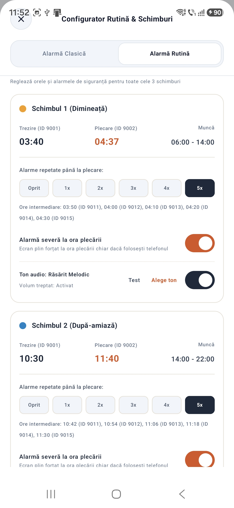

01
PROFILUL TĂU
Configurează-ți turele
Adaugă schimburile și stabilește ordinea și durata ciclului care se potrivește programului tău. Configurezi regulile o dată și le poți urmări în calendar.

Organizează-ți schimburile, alarmele și rutina zilnică într-un singur loc — fără să refaci programul de la zero în fiecare săptămână.
„M-am săturat să refac alarmele în fiecare săptămână.”
Lucrez în trei schimburi. Înainte de fiecare săptămână, îmi setam din nou alarmele și încercam aplicații complicate, doar ca să-mi organizez trezirea pentru muncă.
Am început FlowAlarm ca să-mi fac programul mai ușor de gestionat — și cu gândul că poate sunt și alți oameni care au nevoie de o soluție mai simplă și mai logică.
Povestea creatorului ↗Setezi informațiile de bază, iar apoi vezi programul și alarmele organizate în jurul turelor tale.
Adaugă schimburile și stabilește ordinea și durata ciclului care se potrivește programului tău. Configurezi regulile o dată și le poți urmări în calendar.
Configurează orele de trezire și alarmele de rutină după schimbul tău. FlowAlarm reunește setările de care ai nevoie într-un singur loc.

Vezi zilele de lucru, zilele libere și alarmele într-un calendar ușor de urmărit, împreună cu notițele și activitățile zilei.

Aplicația poate calcula și informa. Tu rămâi cel care decide ce se schimbă.
FlowAlarm este în testare închisă prin Google Play. Am suficienți testeri pentru etapa aceasta și folosesc perioada de test pentru a vedea cum este utilizată aplicația și ce feedback primesc.
GRUPUL DE TESTARE ESTE COMPLET PENTRU ACEASTĂ ETAPĂDupă ce înțeleg mai bine nevoile oamenilor care testează versiunea gratuită, vreau să dezvolt și o variantă Pro. Am câteva idei, dar funcțiile ei nu sunt stabilite încă.
PLAN ÎN DEZVOLTARE · DETALIILE VOR FI ANUNȚATEFlowAlarm este un proiect personal construit pas cu pas. Pe măsură ce versiunea de test evoluează, voi actualiza aici informațiile despre produs.
„FLOW observă.
Tu decizi.”